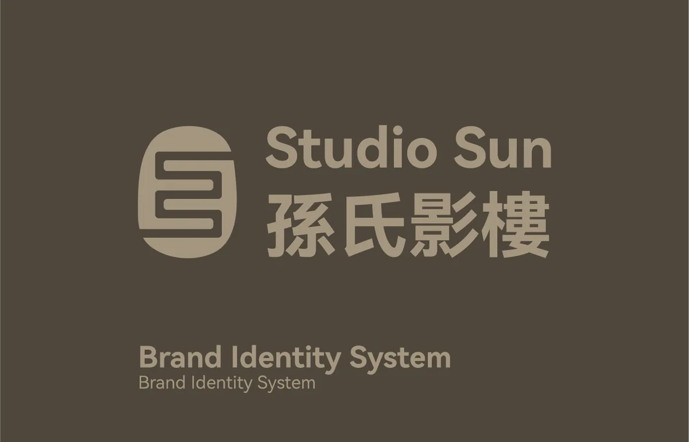

Studio Sun — Bilingual Identity System Studio Sun — Sistema de Identidad Bilingüe
Logo, palette, and typography system for a narrative photography studio working across cultural contexts. Logo, paleta y sistema tipográfico para un estudio de fotografía narrativa que trabaja entre contextos culturales.
A bilingual EN/ZH identity for a narrative photography studio that had to flex between black-tie weddings and candid editorial without changing its skin.
Una identidad bilingüe EN/ZH para un estudio de fotografía narrativa que tenía que moverse entre bodas formales y editorial casual sin cambiar de piel.
- scopealcance
- Full identity system, public-facing brandSistema completo de identidad, marca pública
- serviceservicio
- Identity creation, typography, bilingual EN/ZHCreación de identidad, tipografía, bilingüe EN/ZH
- deliverablesentregables
- Bilingual combomark, six-color tiered palette, typography rules, six application contextsLogotipo bilingüe, paleta de seis colores por niveles, reglas tipográficas, seis contextos de aplicación
- timelinefechas
- February 2024Febrero de 2024

Full write-up for this project lands here as soon as the body copy is approved. The BLUF and specs above already tell the bottom-line story.
El texto completo del proyecto aparecerá aquí en cuanto la copia esté aprobada. El BLUF y las especificaciones arriba ya cuentan la historia esencial.